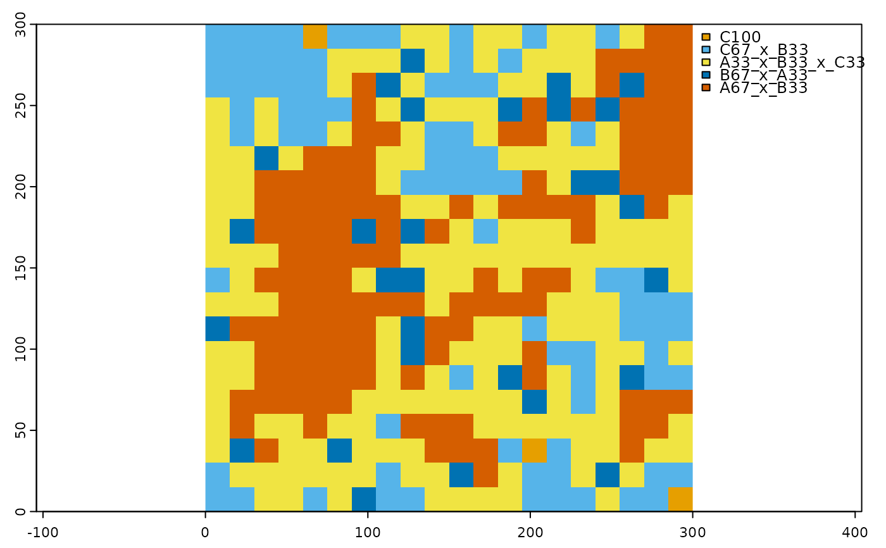
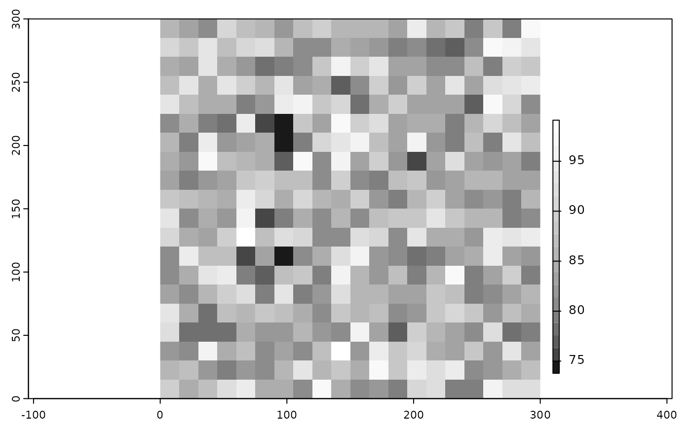

R/mdgp_scale_raster.R
mdgp_scale_raster.Rdscales a categorical raster, given a scaling factor and user-defined label precision
mdgp_scale_raster(
raster,
class_field,
scale_factor,
parts,
rpr_threshold,
monotypic_threshold
)categorical spatial raster (terra SpatRaster) with class names in an attribute field
attribute field in the SpatRaster that contains the class names
ratio of lower (scaled) resolution to higher (original) raster resolution (resolution of lower resolution divided by resolution of higher resolution)
integer - precision of class labels in parts (1 = 100%, 2 = 50%, 3 = 33.3%, 4 = 25%, 5 = 20%)
integer - minimum percentage of grid cell in scaled landscape to be represented by a class
integer - minimum percentage of fine resolution class in a scaled grid cell grid to be considered monotypic
List with 3 objects. Two SpatRaster objects and a list with two objects.
The two scaled raster results are a categorical SpatRaster object with the scaled classified map and scaled class labels in the attribute table, and a numeric SpatRaster object with cell-level information retention. The second object contains a data frame with class-specific information retention and landscape-scale information retention.
relative_abundance_scaled_grid to generate relative abundance for each scaled grid cell,
mdgp_scale classifying relative abundance samples to multi-dimensional grid points, and
scaling_result_to_raster converting scaling result to spatial raster and info_retention_stats.
# load categorical raster
r <- terra::rast(system.file("extdata/nlm_mid_geom_r3_sa0.tif", package = "landscapeScaling"))
# subset the raster to the lower 300 by 300pixels
r_sub <- terra::crop(r,terra::ext(0,300,0,300))
# scale the original map with class name field 'cover'
# scaling parameters: scale factor = 15, parts = 3,
# representativeness threshold = 10%, and monotypic threshold = 90%
scaled_map <- mdgp_scale_raster(r_sub,'cover',15,3,10,90)
#> [1] "number of cells: 400"
#> [1] "number of grid points: 10"
#> [1] "number of grid points remaining: 5"
# plot the scaled raster
# scaled color scheme for six lasses
clr_scale <- c('#E69F00','#56B4E9','#009E73','#F0E442','#0072B2','#D55E00')
terra::plot(scaled_map[[1]],col=clr_scale,mar=c(1.5,1.5,1,1))

# plot the information retention raster
terra::plot(scaled_map[[2]],plg=list(ext=c(310,315,20,220),loc = "right"),
col=gray.colors(20,start=0.1,end=1),mar=c(1.5,1.5,1,1))
